The Modeling view allows you to model existing components as well as create new components.
In some cases, you would import a CAD file that you want to model as a component.
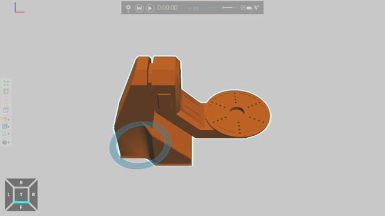
In other cases, you would use commands on the Ribbon to create a component and new geometry.
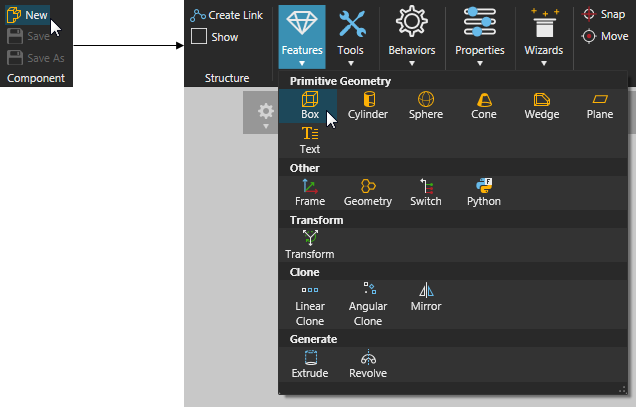
If you are importing CAD files, we highly recommend you clean up and simplify the geometry of the CAD file. For example, a CAD file with a large data count and internal parts should be avoided to help reduce file size and memory consumption as well as boost performance. Generally, you would simplify geometry in the editor you used to create the CAD file. However, import settings and other options in the Modeling view can be used to analyze and import the CAD file using standard practices.
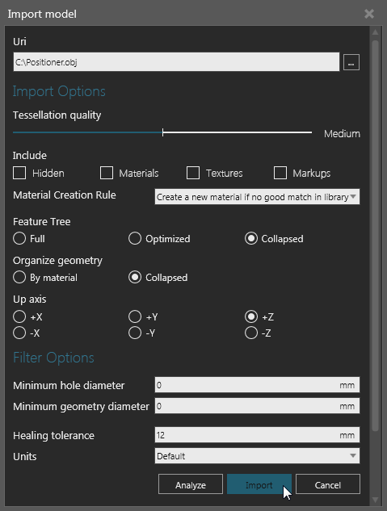
Generally, an imported CAD file is contained in one component with a single node, which is referred to as the component's root node. The data structure of a component is a tree, so every component has a root node.
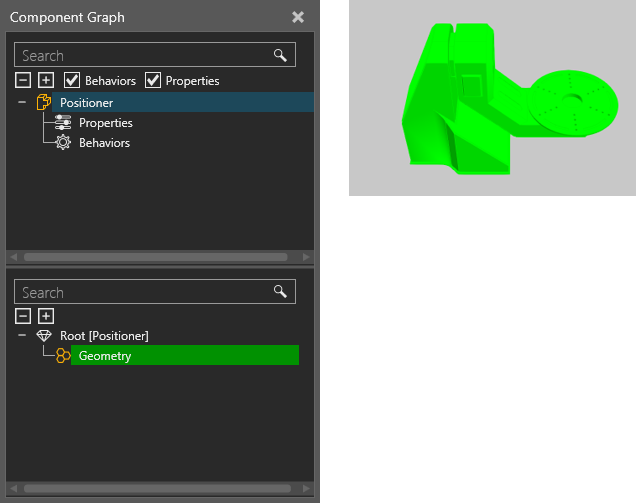
If a component needs to have movable parts or a kinematic structure, you would need to create new nodes in the component.
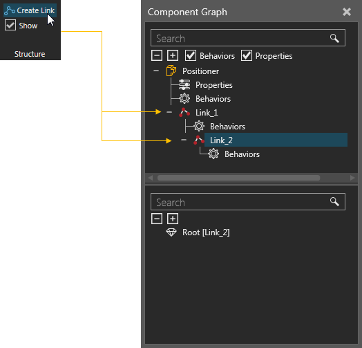
These types of nodes are referred to as links, and each link contains properties for defining an offset, pivot point, joint type and degrees of freedom. That is, a link defines its own mechanism for movement.
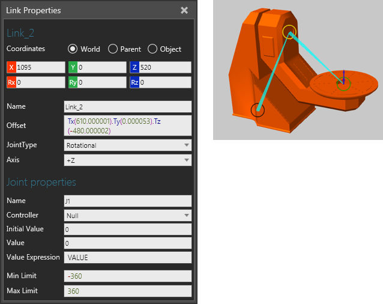
After you create the required nodes in a component, you would need to move geometry into those nodes. Geometry that you import or create in the Modeling view are contained in features.
If you need to regroup geometry in a feature, that is move some geometry into a new or different feature:
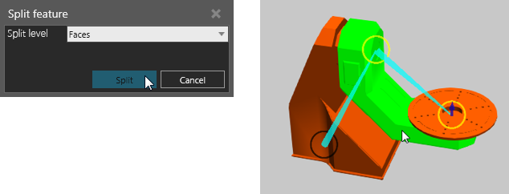
If you want to place a feature in a different node:
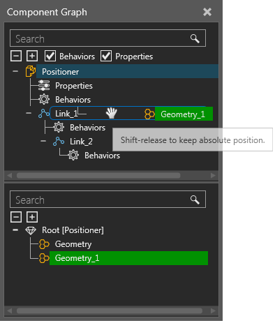
Tip: When moving a node or feature in the Component Graph panel, you can hold down SHIFT to retain its 3D world position.
Once you have the defined the nodes of a component and regrouped its features, you might want to create properties in the component. Component properties are contained in a component's root node and can be used to control the values of other properties in the component as well as make the component parametric.
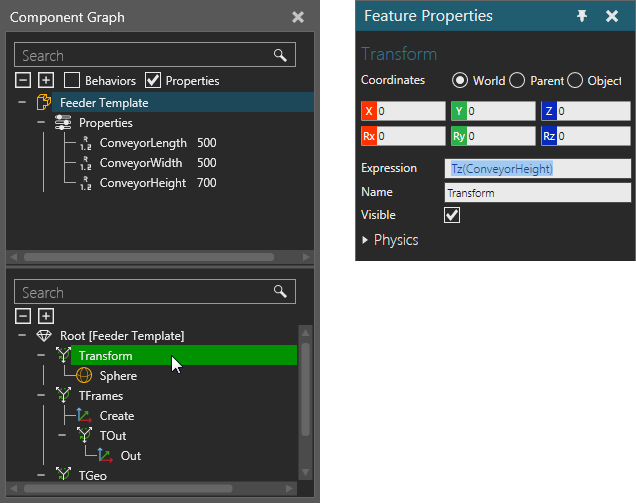
Properties you create in a component will be listed in the Layout view, Properties panel unless you make a property invisible.
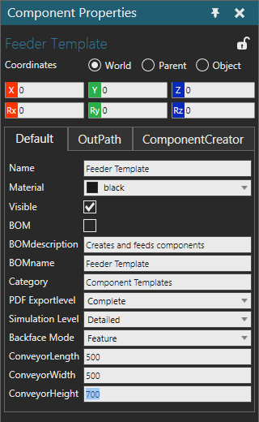
That is, a component property has its own set of properties, which you can read/write in a Property task pane.
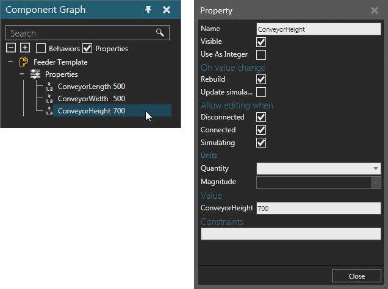
If you want a component to perform tasks before or during a simulation, create behaviors.
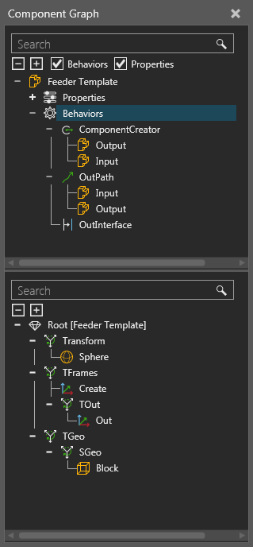
Some behaviors need to reference features and other behaviors to accomplish tasks. For example, a One Way Path references Frame features to define and calculate its path.
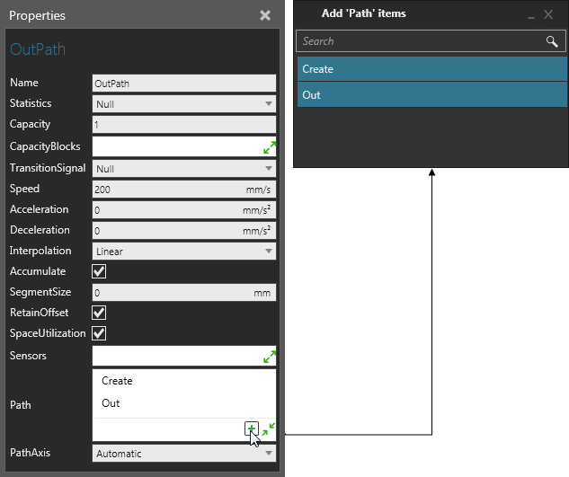
Behaviors can also connect to behaviors in other components. For example, a One to One Interface allows you to connect a component to a One to One Interface in another component granted the interfaces are compatible.
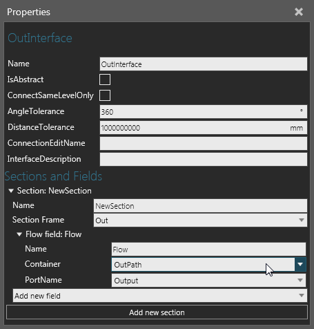
If you want to write code for a component, you can use a Python Script behavior. A Python Script allows you to use Python API as well as other libraries and modules available in stackless Python 2.7. Python Scripts can be used to write logic for a component before or during a simulation as well as to design features, manipulate the 3D world and develop add-ons.
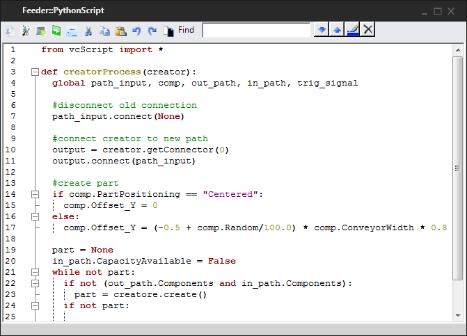
To save a component:
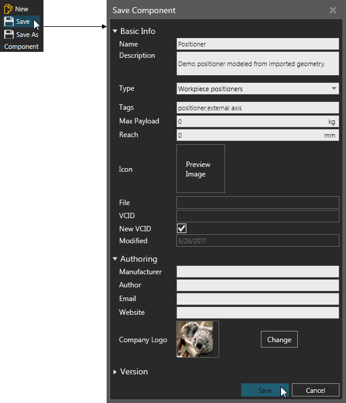